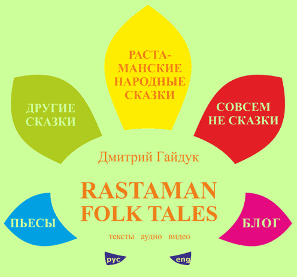

ЧИТАТЬ
:
серая книжка
зеленая книжка
only hard
новые растаманские сказки
московский сборник
конопляная демонология
повесть про чужие глаза
растаманские приметы
джа-будда и его джатаки
цывильные сказки
сказки народов мира
индостанские сказки
индийский покойник
сцены из ветхого завета
беспощадный центр
конопляные джунгли
фаллософия
СМОТРЕТЬ
:
беги, Эльза, беги! (2017)
сказка про банкира (2016)
чего хочет бог
джатака про крокодила
регулярная шизофрения
про покемонов и телепузиков
химачальская история
про дятла
как появились москиты
про два листика
про обезьян
джатака о говне
про слова
про таксиста-грамотея

города
интервью
субкультура
легалайз
ПАВ
праздники
трипы
для головы
ССЫЛКИ НА ХОРОШИЕ САЙТЫ
ENGLISH VERSIONS
:
about fido the cat
about regular mpd
about satanist and godist
about a weightlifter
about all the shit
about nice people (classic case)
about psychonauts
about the doomsday device
about the sausage
about the war
about three druggies and good man
about two leaves
chest jataka
crocodile jataka
holistory
how jah put a rastaman to ordeals
how old rastaman hitch-hiked to africa
long rant about uncle oinky
mousey tale
sleeping hippies museum
tale about the unburnt kush
wise poet burlaka
СЛУШАТЬ
:
растаманские сказки 1.0
растаманские сказки 2.0
растаманские сказки 3.1
растаманские сказки 3.2
растаманские сказки 3.3
повесть про чужие глаза
индийский покойник
принцесса камасандаге
сказки народов мира